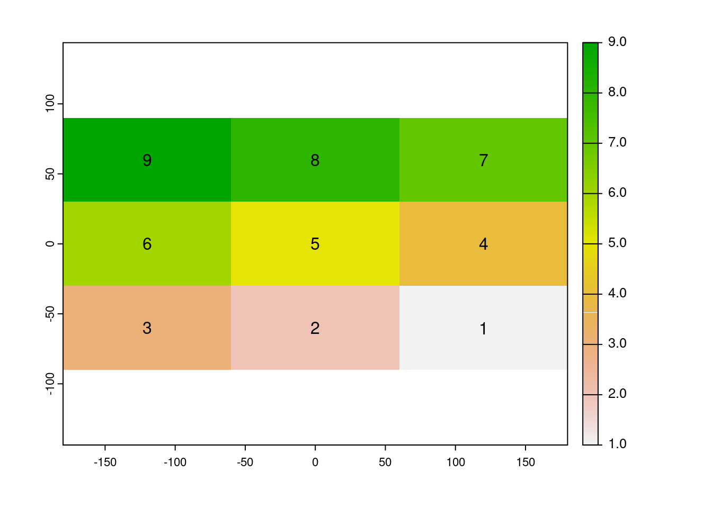
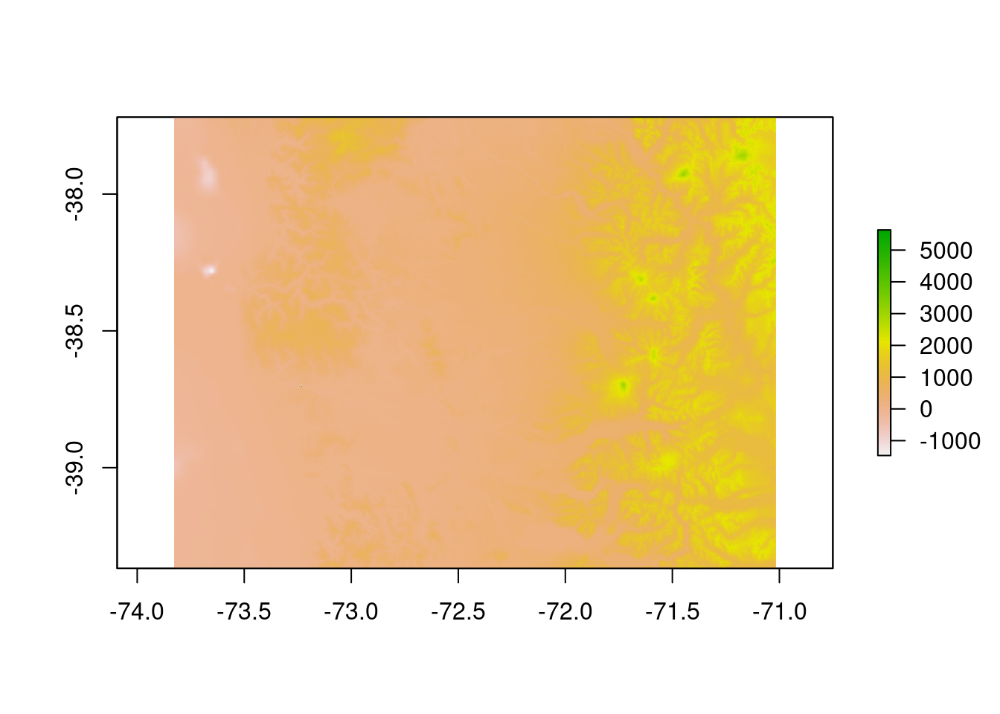
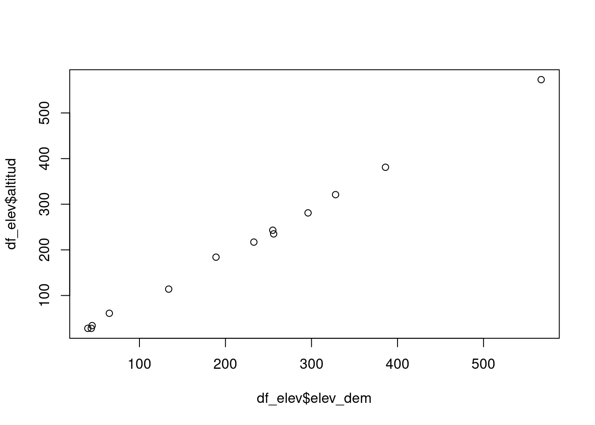
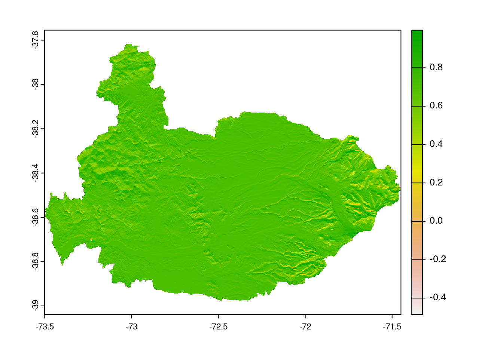
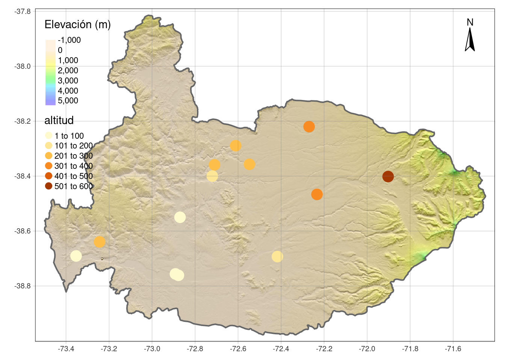

# **R:**
# - R es un lenguaje de código abierto y multiplataforma.
# - Por que ha tenido un alto crecimiento en cuanto al análisis de datos geoespaciales.
# - Por las ventajas que tiene para análisis de datos.Examen
SIG Avanzado (IMSE1017)
1 Primera parte
1.- (20pts) Indique tres motivos por que utilizar el lenguaje R para analizar datos geoespaciales.
- (20pts) ¿Para qué sirve la libreria
GDAL?
# **R:**
# Para manejar datos vectoriales y raster.- (20pts) Indique que paquetes de R utiliza para trabajar con datos vectoriales y raster. (20pts)
# **R:**
# para datos vectoriales usamos `{sf}` y para datos raster `{terra}`- (20pts) Escriba un vector de tipo cáracter que contenga cinco elementos, cada uno debe corresponden a un día de la semana de lunes a viernes. Asigne el vector creado al objeto
dias.
dias <- c('lunes','martes','miercoles','jueves','viernes')- (20pts) Considere el siguiente vector
v <- c(1,8,5,3)Que debe devolver la siguiente operación
r <- v > 5
r[1] FALSE TRUE FALSE FALSE¿Qué tipo de vector es r?
¿Qué valores tiene r?
class(r)[1] "logical"r[1] FALSE TRUE FALSE FALSE- (20pts) Considere las siguientes operaciones en
R:
x <- c(1, 'a', 5)
class(x)[1] "character"¿Explique por qué la clase obtenida es de tipo character?
# **R:**
# Por la jerarquía de coerción los valores numéricos se convierten a tipo
# caracter.- (20pts) Cree un vector numérico con los números de 1 a 100.
1:100 [1] 1 2 3 4 5 6 7 8 9 10 11 12 13 14 15 16 17 18
[19] 19 20 21 22 23 24 25 26 27 28 29 30 31 32 33 34 35 36
[37] 37 38 39 40 41 42 43 44 45 46 47 48 49 50 51 52 53 54
[55] 55 56 57 58 59 60 61 62 63 64 65 66 67 68 69 70 71 72
[73] 73 74 75 76 77 78 79 80 81 82 83 84 85 86 87 88 89 90
[91] 91 92 93 94 95 96 97 98 99 100- Considere la siguiente matriz para realizar operaciones de indexación.
m <- matrix(1:20,ncol=4)- (10pts) Indique como puede extraer la segunda columna en R
m[,2][1] 6 7 8 9 10- (10pts) Indique como puede extraer la tercera fila en R
m[3,][1] 3 8 13 18- (10pts) Indique como puede extraer los valores 7, 12, 8 y 13 en R
m[2:3,2:3] [,1] [,2]
[1,] 7 12
[2,] 8 13- Describa las principales características de las estructuras de dato tipo
data.frame.
# **R:**
# - Es uno de los objetos más destacados, nace del mundo de software de análisis estadístico.
# - Cada columna corresponde a una variable y cada fila a una observación.
# - Puede almacenar columnas con diferentes tipos de datos- Considere el siguiente
data.frame
df <- iris[sample(1:150,20),]- (20pts) Cómo puede filtrar mediante indexación las filas que la
Speciescorresponde asetosa.
df[df$Species == 'setosa',] Sepal.Length Sepal.Width Petal.Length Petal.Width Species
25 4.8 3.4 1.9 0.2 setosa
48 4.6 3.2 1.4 0.2 setosa
7 4.6 3.4 1.4 0.3 setosa
10 4.9 3.1 1.5 0.1 setosa
2 4.9 3.0 1.4 0.2 setosa
45 5.1 3.8 1.9 0.4 setosa
50 5.0 3.3 1.4 0.2 setosa
38 4.9 3.6 1.4 0.1 setosa- (20pts) ¿Cómo puedo obtener los nombres de las columnas del
data.framedf?
names(df)[1] "Sepal.Length" "Sepal.Width" "Petal.Length" "Petal.Width" "Species" - (20pts) Indique dos maneras de extraer la columna
Petal.Lengthy asignela al objetopl.
pl <- df$Petal.length
pl <- df['Petal.Length']- (40pts) Explique por qué necesitamos los paquetes
{sf}y{terra}en R para trabajar con datos espaciales. ¿Cuál es la ventaja de usarlos?
# **R:** En R base no existen estructuras de datos para manejar datos geoespaciales. Necesitamos {terra} y {sf} ya que estos paquetes proporcionan las clases de objetos que nos permiten trabajar de forma adecuada con datos raster y vetcoriales.- (30pts) Explique cuál es la diferencia entre los dos set de datos siguientes:
datos1 <- data.frame(lon = c(-116.8, -114.2, -112.9, -111.9, -114.2, -115.4, -117.7),
lat = c(41.3, 42.9, 42.4, 39.8, 37.6, 38.3, 37.6))
datos1 lon lat
1 -116.8 41.3
2 -114.2 42.9
3 -112.9 42.4
4 -111.9 39.8
5 -114.2 37.6
6 -115.4 38.3
7 -117.7 37.6library(sf)
datos2 <- st_as_sf(datos1,coords = c('lon','lat'))
datos2Simple feature collection with 7 features and 0 fields
Geometry type: POINT
Dimension: XY
Bounding box: xmin: -117.7 ymin: 37.6 xmax: -111.9 ymax: 42.9
CRS: NA
geometry
1 POINT (-116.8 41.3)
2 POINT (-114.2 42.9)
3 POINT (-112.9 42.4)
4 POINT (-111.9 39.8)
5 POINT (-114.2 37.6)
6 POINT (-115.4 38.3)
7 POINT (-117.7 37.6)# **R:** El primero es un `data.frame` y el segundo es un objeto de tipo `sf`.- Respecto al objeto datos creados en el siguiente script.
datos <- data.frame(lon = c(-116.8, -114.2, -112.9, -111.9, -114.2, -115.4, -117.7),
lat = c(41.3, 42.9, 42.4, 39.8, 37.6, 38.3, 37.6))
library(sf)
datos <- st_as_sf(datos1,coords = c('lon','lat'))- (20pts) ¿Qué clase de objeto es
datos$geometry?
class(datos$geometry)[1] "sfc_POINT" "sfc" - (20pts) ¿Qué clase de objeto es
datos$geometry[1]?
class(datos$geometry[1])[1] "sfc_POINT" "sfc" - (20pts) Explique cuál es la diferencia entre las dos clases de objeto anteriores.
# **R:** El primero es un objeto de clase `sfc` un list-column con todas las geometrias, el segundo es un objeto de tipo `sfg` que contiene la geometria individual.- (20pts) La clase
spatRastera qué paquete de R corresponde.
# **R:** a `{terra}`- Considere el siguiente objeto
spatRaster.
library(terra)terra 1.6.47r <- rast(ncol=4,nrow=4,crs="EPSG:4326")- (20pts) ¿Qué valores tiene el objeto
r?
rclass : SpatRaster
dimensions : 4, 4, 1 (nrow, ncol, nlyr)
resolution : 90, 45 (x, y)
extent : -180, 180, -90, 90 (xmin, xmax, ymin, ymax)
coord. ref. : lon/lat WGS 84 (EPSG:4326) - (20pts) ¿Cuál es el sistema de referencia de coordenadas del objeto r?
st_crs(r)$epsg[1] 4326- (20pts) ¿Cómo puedo cambiar/asignar los valores del 1 al 16 a
r?
values(r) <- 1:16- (30pts) ¿Qué valores tiene en cada celda el siguiente raster?
r <- rast(ncol=3,nrow=3)
values(r) <- 9:1
plot(r);text(r)
- (20pts) ¿Qué consecuencias tiene la operación
c(r,r,r,r)con el raster?
r <- rast(ncol=3,nrow=3)
values(r) <- 1:9
r2 <- c(r,r,r,r)# **R:** Crea un raster multicapa, en este caso con cuatro capas.2 Segunda parte
En el archivo data_estaciones.csv tiene información sobre las coordenadas de ubicación de las estaciones climáticas que existen en Chile.
- (20pts) Lea el archivo en R y asígnelo al objeto
df_estaciones.
df_estaciones <- read.csv2('../data/data_estaciones.csv') - (40pts) Convierta el objeto
df_estaciones(data.frame) en un objetosfy asígnele las coordendas geográficas datum wgs84. Asignelo al objetosf_estaciones.
sf_estaciones <- st_as_sf(df_estaciones,coords = c('longitud','latitud'),crs =4326)- (40pts) Utilice el archivo
Cuencas_BNAy seleccione las estaciones que se encuentran en la cuenca del río Imperial.
cuencas <- read_sf('../data/cuencas_Chile')
cuencas <- st_transform(cuencas,st_crs(sf_estaciones))
cuenca_imperial <- cuencas[cuencas$NOM_CUEN == 'Rio Imperial',]
estas_imperial <- st_intersection(sf_estaciones,cuenca_imperial)Warning: attribute variables are assumed to be spatially constant throughout all
geometries4.- (40pts) Utilice el paquete {elevatr} para descargar datos de elevación para la cuenca del río Imperial. Asignelo al objeto dem_imperial.
library(elevatr)
dem_imperial <- get_elev_raster(cuenca_imperial,z = 9)Mosaicing & ProjectingNote: Elevation units are in meters.plot(dem_imperial)
- (100 pts) Extraiga el valor de elevación del dem en los puntos de la estaciones. Compare los valores de elevación del dem con los que tiene el archivo
data_estaciones.csv. Haga un gráfico que muestre las elevaciones del dem y las elevaciones del archivo.
elev_dem <- extract(dem_imperial,estas_imperial)
df_elev <- cbind(elev_dem,estas_imperial)
plot(df_elev$elev_dem,df_elev$altitud,type ='p')
- (100pts) Cree un mapa de sombras (hillshade) para la cuenca del río Imperial.
dem_imperial <- rast(dem_imperial)
dem_imperial <- mask(dem_imperial,cuenca_imperial)
dem_imperial <- trim(dem_imperial)
slope = terrain(dem_imperial, v='slope',unit = 'radians')
aspect = terrain(dem_imperial, v='aspect',unit = 'radians')
hill = shade(slope, aspect)
plot(hill)
- (100pts) Cree un mapa estático con
{tmap}del mapa de sombras (hillshade). Debe contener los siguientes elementos:
- Flecha norte
- Grilla en coordendas geográficas.
- Leyenda para la elevación
- Bordes de la cuenca del río Imperial
library(tmap)
mapa <- tm_shape(hill) +
tm_raster(style = 'cont',palette = grey(0:100/100),legend.show = FALSE) +
tm_shape(dem_imperial) +
tm_raster(title= 'Elevación (m)', style ='cont',palette = rev(topo.colors(20)),alpha = .4) +
tm_shape(cuenca_imperial) +
tm_borders(lwd=2) +
tm_shape(estas_imperial) +
tm_dots(col='altitud',size=1)+
tm_grid(lwd = .4,alpha = .6) +
tm_compass(position = c('right','top'))
mapastars object downsampled to 1327 by 753 cells. See tm_shape manual (argument raster.downsample)
stars object downsampled to 1327 by 753 cells. See tm_shape manual (argument raster.downsample)